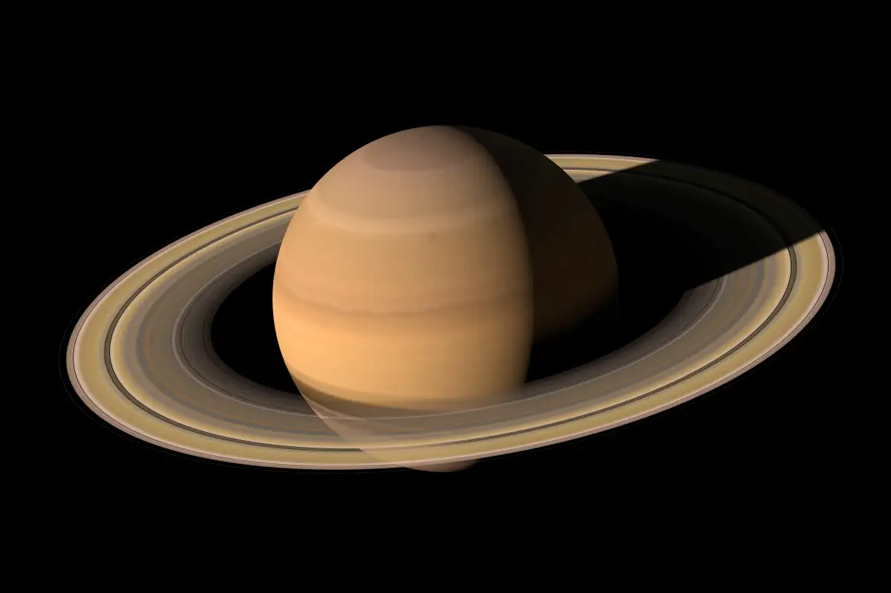

Saturno es el sexto planeta del sistema solar contando desde el Sol, el segundo en tamaño y masa después de Júpiter y el único con un sistema de anillos visible desde la Tierra. Su nombre proviene del dios romano Saturno. Forma parte de los denominados planetas exteriores o gaseosos. El aspecto más característico de Saturno son sus brillantes y grandes anillos. Antes de la invención del telescopio, Saturno era el más lejano de los planetas conocidos y, a simple vista, no parecía luminoso ni interesante. El primero en observar los anillos fue Galileo en 1610, pero la baja inclinación de los anillos y la baja resolución de su telescopio le hicieron pensar en un principio que se trataba de grandes lunas. Christiaan Huygens, con mejores medios de observación, pudo en 1659 observar con claridad los anillos. James Clerk Maxwell, en 1859, demostró matemáticamente que los anillos no podían ser un único objeto sólido sino que debían ser la agrupación de millones de partículas de menor tamaño. Las partículas que componen los anillos de Saturno giran a una velocidad de 48 000 km/h, 15 veces más rápido que una bala.

Características Generales
Saturno es un planeta visiblemente achatado en los polos con un ecuador que sobresale formando un esferoide ovalado
Los diámetros ecuatorial y polar son de 120 536 y 108 728 km, respectivamente.
Los otros planetas gigantes son también ovalados pero en menor medida
Saturno posee una densidad específica de aproximadamente 690 kg/m³, siendo el único planeta del sistema solar con una densidad inferior a la del agua (1000 kg/m³).
La atmósfera del planeta está formado por un 96 % de hidrógeno y un 3 % de helio
El volumen del planeta es suficiente como para contener 740 veces la Tierra, pero su masa es solo 95 veces la terrestre, a causa de la ya mencionada baja densidad media.
El periodo de rotación de Saturno es incierto dado que no posee superficie y su atmósfera gira con un periodo distinto en cada latitud.
Comparado con el planeta Tierra, el tamaño de Saturno es nueve veces mayor, y su órbita está nueve veces más lejos del Sol. Esto significa que si observamos desde el Sol a la Tierra y a Saturno cuando están en el mismo punto, en un nodo de intersección de sus órbitas, la Tierra tiene el mismo tamaño aparente que Saturno
Estructura Interna
Los modelos planetarios típicos consideran que el interior del planeta es semejante al de Júpiter, con un núcleo rocoso rodeado por hidrógeno, helio y trazas de otras sustancias volátiles.Sobre él se extiende una extensa capa de hidrógeno líquido, debido a los efectos de las elevadas presiones y temperaturas. Los 30 000 km exteriores del planeta están formados por una extensa atmósfera de hidrógeno y helio. El interior del planeta probablemente contenga un núcleo formado por materiales helados acumulados en la formación temprana del planeta y que se encuentran en estado líquido en las condiciones de presión y temperatura cercanas al núcleo. Este se encuentra a temperaturas en torno a 12 000 K —aproximadamente el doble de la temperatura de la superficie del Sol—.
Por otro lado, y al igual que Júpiter y Neptuno, Saturno irradia más calor al exterior del que recibe del Sol. Una parte de esta energía está producida por una lenta contracción del planeta que libera la energía potencial gravitatoria producida en la compresión. Este mecanismo se denomina mecanismo de Kelvin-Helmholtz. El calor extra generado se produce en una separación de fases entre el hidrógeno y el helio relativamente homogéneos que se están diferenciando desde la formación del planeta, liberando energía gravitatoria en forma de calor.